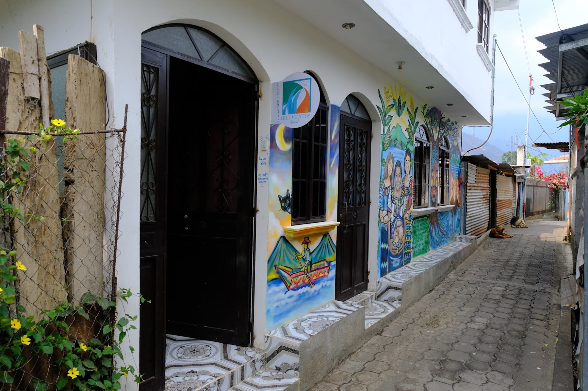
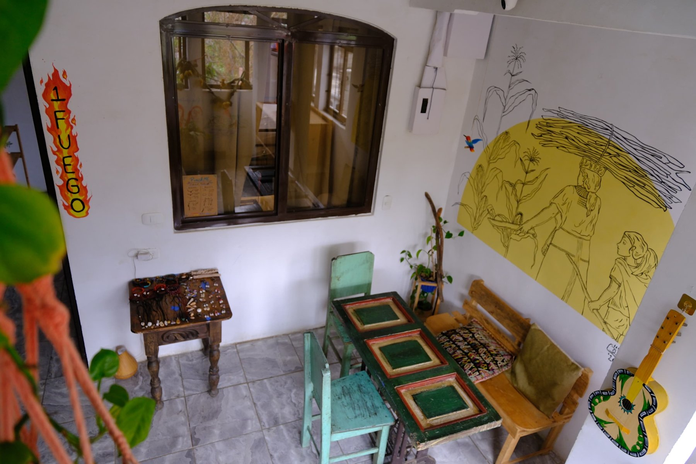
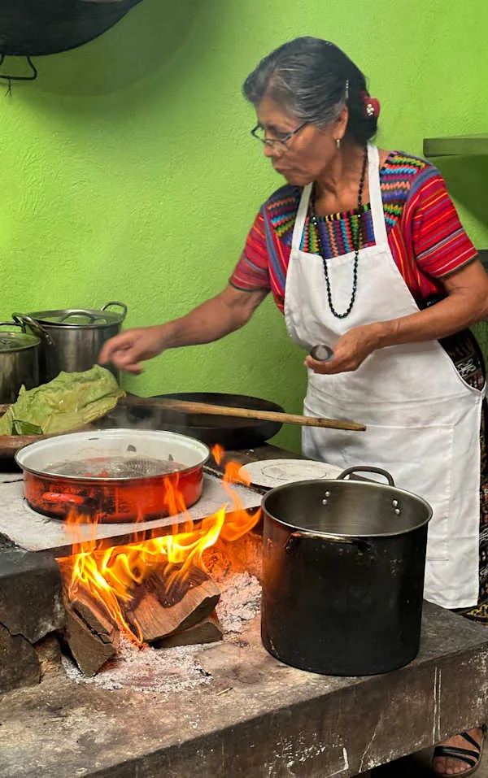
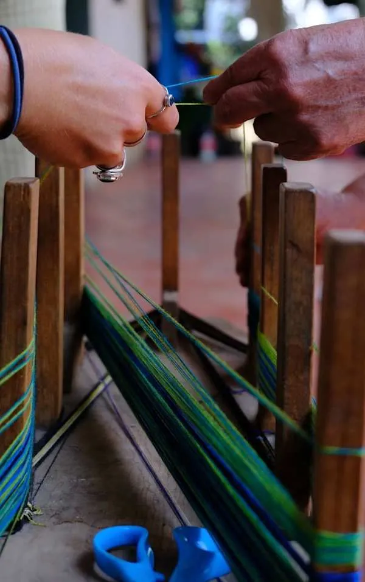
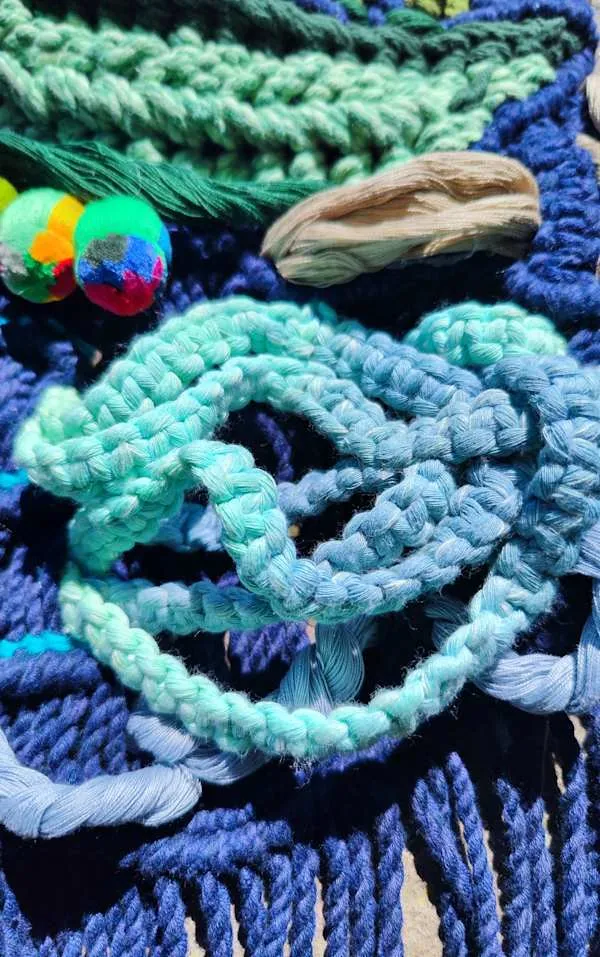
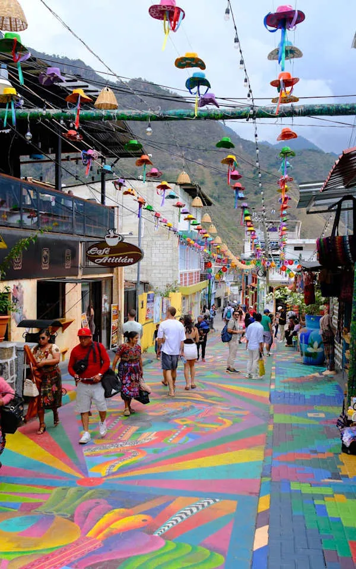
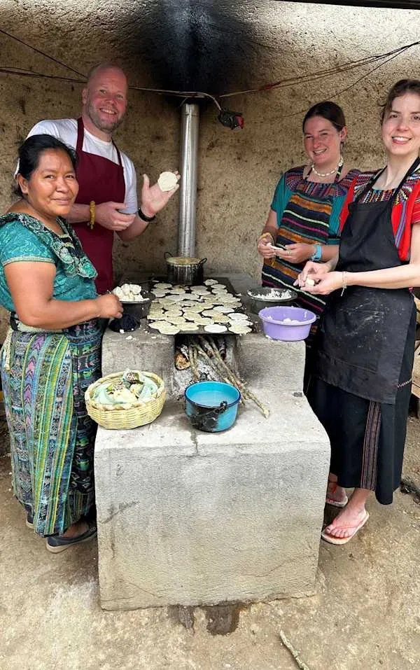

SAN JUAN LA LAGUNA · GUATEMALA
Find
your element.
A little retreat to slow down,
share and connect with what matters.
Living culture. Nature. Connection.Discover 4 Elementos
△ Earth≋ Water☼ Fire〰 Air
A PLACE TO BELONG
Some journeys
stay with you.
Bring your curiosity. Slow down. Make room for an unexpected conversation and get to know San Juan up close.
We are a small hostel with a community spirit. Details made by Atitlán artisans and cultural exchange give your stay a deeper meaning.
Discover our way of travelling

Our vision
To travel
is to care.
We support local producers and traders, preserve ancestral knowledge and respect the land and the people who call it home. We seek tourism that does not gentrify and makes genuine exchanges possible.
Discover Red Nephila ↗REST YOUR WAY
Your place in San Juan.
Agua, Fuego and Tierra: three rooms,
two shared dorms and one private room.
A SPACE OF YOUR OWN
Private
room
A double bed to enjoy
your own space.
Free Wi-FiHot showersBed linenTea and coffeeDrinking water
GO EXPLORING
Connect with the place.
And its people.

Stories woven together
Weaving, embroidery and natural dyes with women from the community.
A fresh view of the lake
Hikes to the Mayan Face and kayaking to explore Atitlán.
Better when shared
Traditional cooking and shared dinners. Ask our team about activities and availability.
HOSTEL EVENTS & DAYTRIPS
Experiences to share.
Activities hosted by 4 Elementos and the local community. Open each card for schedules, prices and details. Confirm availability and the total price with the team before attending.

SAN JUAN LA LAGUNA · 2 h
Guatemalan cooking
Q175 / person
See all details
Prepare traditional dishes with a local family, discover San Juan ingredients and share stories over food.
- Schedule
- Daily; flexible schedule.
- Duration
- 2 h
- Payment
- Cash only. For 2 or more: Q150 per person.

SAN JUAN LA LAGUNA · 3 h 20 min
Mayan Face sunrise hike
Q150 / person
See all details
Watch the sunrise over Atitlán and its volcanoes. Travel from San Juan to Santa Clara, then hike 30–45 minutes to the viewpoint. Includes transport, a local guide, entry and a hot drink at the summit.
- Schedule
- Daily. Departs 04:00 from 4 Elementos Hostal; returns 07:20.
- Duration
- 3 h 20 min
- Payment
- Cash only.

SAN JUAN LA LAGUNA · 2 h
Weaving with Tzutujil women
Q175 / person
See all details
Learn to weave with women from San Juan and discover ancestral traditions shared through their hands, stories and threads.
- Schedule
- Daily; flexible schedule.
- Duration
- 2 h
- Payment
- Cash only. For 2 or more: Q150 per person.
Cancellation or rescheduling: 48 hours in advance.
Ask the hostel ↗
SAN JUAN LA LAGUNA · 2 h
Macramé & mountains
Q175 / person
See all details
Learn basic knots step by step, enjoy a creative moment in good company and take home your own handmade piece.
- Schedule
- Daily; flexible schedule.
- Duration
- 2 h
- Payment
- Cash only. For 2 or more: Q150 per person.

SAN JUAN LA LAGUNA · 2 h 30 min
San Juan cultural tour
Q175 / person
See all details
Explore the village murals, art and flavours. Discover local cacao, weaving and honey-making traditions.
- Schedule
- Tuesdays and Fridays at 10:00.
- Duration
- 2 h 30 min
- Payment
- Cash only. For 2 or more: Q150 per person.

SAN JUAN LA LAGUNA · 1 h
Coffee tour
Q150 / person
See all details
Meet local growers and learn about traditional and organic methods. Follow the process from bean to roast and finish with a guided tasting of artisanal coffee.
- Schedule
- Daily; flexible schedule.
- Duration
- 1 h
- Payment
- Cash only.
Cancellation or rescheduling: 48 hours in advance.
Ask the hostel ↗
SAN JUAN LA LAGUNA · 2 h
Tortillas with our neighbours
Q175 / person
See all details
Make tortillas from scratch with women from the neighbourhood. Learn traditional techniques and connect with everyday life in San Juan.
- Schedule
- Daily at 14:00; flexible schedule.
- Duration
- 2 h
- Payment
- Cash only. For 2 or more: Q150 per person.

SAN JUAN LA LAGUNA · 2 h
Traditional embroidery
Q175 / person
See all details
Learn basic techniques with local artisans such as Helena, who carry a craft passed down through generations. Create your own design and personalise your clothing.
- Schedule
- Daily at 14:00; flexible schedule.
- Duration
- 2 h
- Payment
- Cash only. For 2 or more: Q150 per person.
A GLIMPSE OF LIFE HERE
Small spaces. Full of life.
YOUR JOURNEY STARTS HERE
See you
in San Juan.
02 Avenida, Zona 2, Callejón la Cuchilla.
San Juan La Laguna, Guatemala.
An easy arrival
Ask about shuttles from Antigua or Guatemala City.
Arrange my transferCheck-in and check-out
Check-in: 14:00–20:00.
Check-out: by 11:00.
Before you book
Cash payments. Confirm the total rate, taxes and conditions when booking. Quiet hours: 22:00–07:00.
MAKE ROOM FOR A NEW STORY
Your next journey
has a home here.
For questions about your stay, contact our team directly.
Ask us directly about dates, rates and availability.